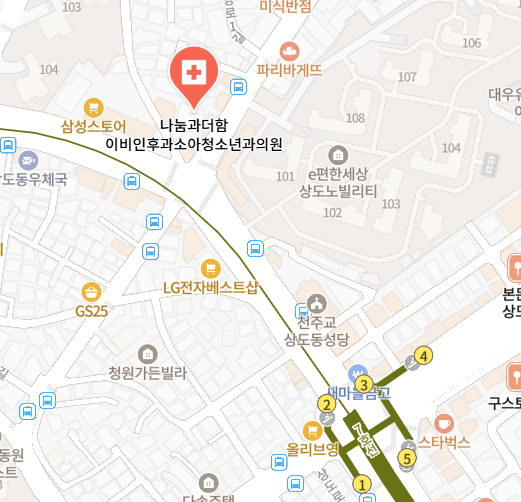

갑작스러운 세상의 흔들림,
원인을 정확하게 바로잡아야합니다.
동작구 나눔과더함 이비인후과는 어지럼증, 이석증(양성돌발성체위현훈), 전정신경염, 메니에르병 등 귀(말초성) 평형기관 이상을 당일 정밀 진단하고 맞춤 치료를 시행합니다.
어지럼증 특화 클리닉
이석증 (BPPV)
자세 변경 시 1분 이내의 회전성 어지러움, 당일 이석정복술
전정신경염
수일간 지속되는 극심한 회전과 구토, 조기 전정재활치료
메니에르병
귀먹먹함, 이명, 난청 동반 어지럼증, 내림프수종 식이·약물치료
말초성 vs 중추성 감별
뇌경색/소뇌 이상 신경학적 위험 신호 스크리닝
현재 겪고 계신 어지럼증 양상을 선택해 보세요
어지럼증은 발생 시간, 지속 시간, 동반 증상에 따라 원인 질환과 치료법이 완전히 달라집니다.
이석증 (양성돌발성체위현훈) 의심
내이의 반고리관에 이석(칼슘 미세입자)이 떨어져 나와 신경을 자극하는 대표적인 말초성 어지럼증입니다. 청력 저하나 이명은 거의 동반되지 않으며, 특정 자세에서 심한 회전성 어지러움과 메스꺼움이 발생합니다.
대학병원급 비디오안진검사(VNG)로 이탈된 이석의 위치(후반고리관, 가쪽반고리관 등)를 10분 내 정확히 판별하고, 당일 즉시 에플리 이석정복술(Epley Maneuver)로 90% 이상 빠르게 회복할 수 있습니다.
동작구 이석증 치료
비디오안진검사와 당일 이석정복술
이석증(양성돌발성체위현훈, BPPV)은 어지럼증의 가장 흔한 원인 질환입니다. 귀 깊숙한 곳의 전정기관에 고정되어 있어야 할 칼슘 결정체(이석)가 반고리관 내부로 떨어져 들어가 머리를 움직일 때마다 림프액을 자극하여 극심한 회전성 어지러움을 유발합니다.
동작구 나눔과더함 이석증 진료
- 정밀 비디오안진기(VNG)를 통한 실시간 동체 안진(눈동자 튐) 판독
- 후반고리관 / 수평반고리관 / 전반고리관 정확한 이탈 위치 감별
- 체위 변환 물리치료 이석정복술 당일 시행
- 당일 치료 및 재발 방지 생활수칙 안내
이석증 주요 증상
- • 아침에 일어날 때, 베개를 벨 때 천장이 핑 돎
- • 머리를 특정 각도로 돌릴 때 10초~1분간 빙빙 돎
- • 가만히 머리를 고정하면 어지럼증이 서서히 멈춤
- • 구역감, 메스꺼움, 식은땀 동반 (난청/이명 없음)
이석증 발병 원인
- • 노화 및 골밀도 저하 (칼슘 대사 이상)
- • 비타민 D 결핍 및 전신 피로, 면역 저하
- • 두부 외상(머리 부딪힘), 격렬한 운동 후
- • 장기간 침상 안정 및 스트레스
이석정복술(Canalith Repositioning Procedure) 원리
이석증은 주사나 약물로는 완전한 치료가 어렵습니다. 환자의 머리 위치를 중력 방향에 맞춰 단계적으로 회전시켜 반고리관에 빠진 이석을 원래 자리인 전정기관(난형낭)으로 되돌려 넣는 물리치료적 정복술이 근본적인 치료입니다. 무분별한 자가치료는 이석을 다른 반고리관으로 빠뜨릴 위험이 있으므로 반드시 이비인후과 전문의의 정밀 진단 후 시행해야 합니다.
전정신경염 발병 기전
평형감각 정보를 뇌로 전달하는 전정신경에 바이러스 감염이나 미세혈관 순환 장애로 염증이 생겨, 한쪽 전정기능이 급격히 저하되면서 뇌가 양측 평형의 심한 불균형을 감지하여 발생합니다.
지속적 회전성 어지러움
이석증과 달리 머리를 가만히 두고 누워 있어도 눈동자가 한쪽으로 튀는 수평 회전 안진이 지속되며, 수일간 극심한 어지러움과 구토, 보행 불안정이 발생합니다. 청력 저하는 없습니다.
나눔과더함 이비인후과의 2단계 전정신경염 회복 치료
전정억제제 및 진토제, 소염제를 단기간 사용하여 환자의 극심한 어지럼과 구토를 신속히 완화합니다.
진정제를 조기 감량하고 뇌의 전정보상작용(Vestibular Compensation)을 촉진하는 전정재활운동을 지도하여 만성 후유증을 방지합니다.
동작구 전정신경염
급성기 완화와 맞춤 전정재활치료
전정신경염(Vestibular Neuritis)은 감기를 앓고 난 뒤나 과도한 피로, 면역 저하 상태에서 갑자기 찾아옵니다. 뇌졸중(소뇌 경색)과 초기 증상이 유사할 수 있으므로, 이비인후과 전문의의 비디오안진검사를 통해 중추성 어지럼증을 정확히 감별하는 것이 최우선입니다.
초기 어지럼증이 가라앉은 후에도 누워만 있으면 뇌의 평형 적응이 늦어져 만성 잔여 어지럼증이 남을 수 있습니다. 나눔과더함 이비인후과에서는 환자 상태에 맞춘 단계별 전정재활 프로토콜을 처방합니다.
동작구 메니에르병
청력 보존과 내림프수종 관리
메니에르병(Meniere's Disease)은 달팽이관과 전정기관 속 림프액의 압력이 비정상적으로 높아지는 내림프수종(Endolymphatic Hydrops)으로 인해 발생합니다. 어지럼증과 함께 청각 증상이 동반되는 질환입니다.
메니에르병 전형적 징후
순음청력검사 정밀 추적
초기 메니에르병은 저음역 난청이 나타났다가 호전되는 변동성을 보입니다. 나눔과더함 이비인후과에서는 방음 청력검사실에서 청력 변동 추이를 추적관찰하여 영구적인 청력 손실을 사전에 차단합니다.
개인별 맞춤 약물치료
급성기에는 전정 진정제로 어지럼을 가라앉히고, 유지기에는 내림프압을 낮추기 위한 이뇨제, 베타히스틴, 혈액순환제 등을 환자 상태에 맞춰 처방합니다.
메니에르병 재발을 막는 핵심 생활 수칙 (저염식 식이요법)
어지럼증 감별: 귀 질환과 뇌 질환 구분
어지럼증의 약 80%는 귀(이비인후과) 질환이지만, 약 10~15%는 소뇌·뇌간 뇌졸중 등 중추성 질환입니다. 빠르고 정확한 감별이 중요합니다.
| 구분 항목 | 말초성 어지럼증 (귀 질환 - 이비인후과) | 중추성 어지럼증 (뇌 질환 - 응급 신경과) |
|---|---|---|
| 대표 질환 | 이석증(BPPV), 전정신경염, 메니에르병 | 소뇌경색, 뇌간 허혈, 뇌종양, 편두통성 어지럼증 |
| 어지럼의 양상 | 세상이 빙글빙글 도는 극심한 회전성 | 중심을 못 잡고 비틀거림, 붕 뜨는 부동성 |
| 비디오안진(눈떨림) | 시선 고정 시 안진 억제됨 (수평-회전성) | 수직 방향 안진, 시선 고정 시에도 안진 지속 |
| 동반 신경학적 징후 | 없음 (심한 구토, 오심만 동반) | 발음 어눌함, 물체가 둘로 보임(복시), 편측 마비 |
| 보행 능력 | 어지럽지만 부축 시 한 발로 디딤 가능 | 한쪽으로 심하게 쏠려 스스로 전혀 서 있지 못함 |
나눔과더함 이비인후과 5단계 진단·치료 프로세스
원인을 알 수 없는 반복된 어지럼증, 최신 장비와 풍부한 임상 경험을 바탕으로 원인을 찾아드립니다.
병력 청취
어지럼 발생 시점, 지속 시간, 자세 변화에 따른 양상, 복용 약물 및 전신 건강 상태를 꼼꼼히 확인합니다.
비디오안진검사 (VNG)
적외선 특수 고글을 착용하고 머리 위치를 변경하며 미세한 안진(눈동자 튐)을 실시간 정밀 추적합니다.
청력 & 고막 검사
방음부스에서 순음청력검사 및 고막 검사를 시행하여 메니에르병, 돌발성 난청, 중이염 등 청각성 복합 질환을 감별합니다.
원인별 맞춤 치료
이석증은 즉시 이석 정복술로 이석을 복위시키고, 신경염/메니에르병은 약물 치료를 시작합니다.
재발 방지 전정재활
뇌의 균형 회복을 돕는 전정재활운동법, 저염식 영양 가이드 등을 안내합니다.
이성호 대표원장
나눔과더함 이비인후과 어지럼증 클리닉
"어지럼증은 참는 병이 아니라,
원인을 찾아 바르게 되돌리는 질환입니다."
갑자기 세상이 빙빙 돌고 구토가 밀려올 때, 환자분들은 극심한 공포와 불안감을 느끼게 됩니다. 그러나 어지럼증의 대다수는 귀의 평형기관(전정기관 및 세반고리관)의 문제로 발생하며, 정확한 검사를 통해 치료가 가능합니다.
나눔과더함 이비인후과는 불필요한 과잉진료를 철저히 배제하고, 환자 한 분 한 분의 증상과 검사소견을 정밀하게 분석하여 근본적인 원인을 찾기위해 최선을 다하고 있습니다.
나눔과더함 이비인후과 위치 및 진료 시간
동작구 만양로 5-1 301호, 상도역 3번 출구에서 도보 2분거리 위치
- • 지하철: 7호선 상도역 3번출구 도보2분 거리
- • 버스: 상도노빌리티 정류장 하차
- • 주차: 건물 내 주차 가능

동작구 어지럼증·이석증 자주 묻는 질문
환자분들께서 가장 자주 궁금해하시는 질문에 이비인후과 전문의가 답해드립니다.
다만 이석증은 골밀도 감소, 비타민D 부족, 피로 등에 의해 1년 내 약 15~20% 정도 재발할 수 있습니다. 치료 후 며칠간은 고개를 과도하게 젖히거나 숙이는 동작을 피하고, 충분한 수분 섭취와 규칙적인 생활을 유지하는 것이 재발 예방에 중요합니다.
만약 어지럼증과 함께 말이 어눌해지거나(구음장애), 물체가 두 개로 보이거나(복시), 한쪽 팔다리에 힘이 빠지는 신경학적 증상이 동반된다면 뇌졸중 위험이 있으므로 즉시 응급 신경과 진료를 받으셔야 합니다.
초기 2~3일간은 진정 약물로 급성 증상을 다스린 뒤, 조기에 능동적인 전정재활운동(VRT)을 시작하면 대개 1~2주 내에 일상 복귀가 가능하며, 수 주에 걸쳐 뇌의 전정보상작용을 통해 후유증 없이 회복됩니다.
이뇨제 등 맞춤 약물치료와 더불어 하루 염분 섭취 2g 이하의 철저한 저염식이 필수적입니다. 또한 카페인(커피, 녹차), 알코올, 흡연을 제한하고 스트레스와 수면 부족을 철저히 관리해야 청력 손실과 재발을 막을 수 있습니다.
또한 검사 도중 어지러움으로 구토가 유발될 수 있어 내원 2~3시간 전에는 과식을 피하고 가벼운 식사를 권장합니다. 진정제나 멀미약은 안진 반응을 일시적으로 억제할 수 있으므로 복용 전 병원에 미리 문의해 주시기 바랍니다.
건물 내 주차 및 인근 주차 지원이 가능하오니 자차로 내원 시 미리 전화 주시면 상세히 안내해 드리겠습니다.